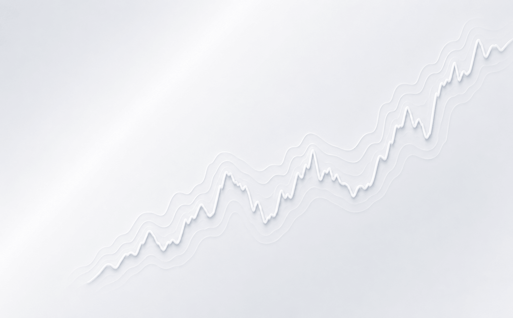

Трейдерам
Чтобы сверять собственные идеи с уровнями, контекстом и альтернативными сценариями.
Ключевые уровни, сценарий движения, драйверы рынка и риск-зоны в формате, с которым удобно принимать решения.
Для тех, кому нужна готовая структура рынка, а не поток лишних новостей
Чтобы сверять собственные идеи с уровнями, контекстом и альтернативными сценариями.
Чтобы понимать, почему движется рынок, где актив перегрет и какие события могут изменить картину.
Чтобы быстро получать единый взгляд на рынок без ручного сбора графиков, календаря и рыночных факторов.
Чтобы быстрее собирать рыночный контекст и сверять собственные выводы с готовыми сценариями.
Аналитика, которую можно сразу использовать
Поддержка, сопротивление и ключевые ценовые зоны.
Базовый маршрут цены и условия его отмены.
Драйверы, новости и текущее состояние рынка.
Главное по ситуации и возможным действиям.
В одном обзоре собраны ключевые уровни, сценарии движения, драйверы рынка и риск-зоны в понятную картину по активу.
Аналитика показывает зоны, где сценарий становится слабым или полностью ломается.
Мы не продаем «точку входа любой ценой». Задача аналитики — показать вероятные маршруты цены, условия подтверждения и зоны, где риск становится неадекватным.
Разбираем тренд, волатильность, драйверы и календарь.
Отмечаем зоны, где цена может получить реакцию.

Формируем план: подтверждение, цель, отмена, риск.
Корректируем взгляд, когда рынок меняет структуру.
Разбор выстроен по одной логике: от контекста рынка к понятному плану действий.
Пробный доступ
$5$0
Посмотрите формат аналитики на одном актуальном обзоре.
Pro
месяц$20$0
Пробный период 2 дня. Все текущие отчёты по BTC, ETH и XAU.
Pro
$50$0
Пробный период 2 дня. Тот же полный доступ, но на более долгий срок.
Нет. Это рыночная карта: уровни, сценарии, драйверы и зоны риска для самостоятельного решения.
Сейчас в фокусе BTC, ETH и XAU. Новые активы будут добавляться в Pro по мере расширения сервиса.
Обзоры обновляются, когда меняются уровни, сценарии, драйверы или риск-зоны по активу.
Да, если нужен понятный обзор рынка без потока лишних новостей и ручного сбора факторов.
Один полный аналитический разбор, чтобы оценить формат перед оформлением Pro.
Нет. Аналитика помогает видеть контекст и риски, но не заменяет риск-менеджмент.